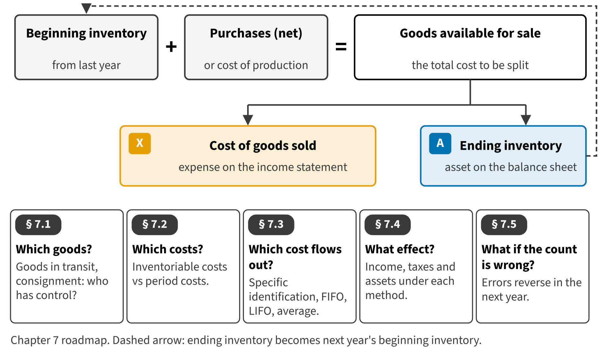

Part I · Foundations and the four financial statements · Chapter 7
Inventory I: Goods, Costs and Cost Flows
المخزون (1): البضاعة والتكاليف وتدفق التكلفة
Inventory is often the largest current asset of a manufacturer or a retailer. It is also the link between the balance sheet and the income statement: every unit is either still in inventory at the end of the year or part of cost of goods sold. In this chapter you learn which goods and which costs go into inventory, how costs flow out to cost of goods sold, and what happens when the count is wrong.

Start here
Then
What this chapter is tested on
| LOS | Official statement (ICMA, 2024) | In plain words | Depth here |
|---|---|---|---|
| A.2.c | identify issues in inventory valuation, including which goods to include, what costs to include, and which cost assumption to use | Decide which goods and which costs belong in inventory. | Full treatment |
| A.2.d | identify and compare cost flow assumptions used in accounting for inventories | Compare specific identification, FIFO, LIFO and average cost, under periodic and perpetual systems. | Full treatment |
| A.2.f | calculate the effect on income and on assets of using different inventory methods | Calculate the effect of each method on income, taxes and assets. | Full treatment |
| A.2.g | analyze the effects of inventory errors | Analyze the effect of an inventory error over two years. | Full treatment |
| A.2.ff.iii | identify and describe the following differences between U.S. GAAP and IFRS: … (iii) inventories, with respect to costing methods, valuation, and write-downs (e.g., LIFO) … | State the main IFRS difference: LIFO is not allowed under IAS 2. | Preview (full in Chapter 17) |
The official statements are quoted from the ICMA Learning Outcome Statements (effective September 1, 2024). The plain-words column restates them in simpler English. The exam may test any outcome up to Level C.
What you already know
You already know periodic and perpetual systems, FIFO and the weighted average from your studies in Arabic or French. Two things may be new. LIFO. IFRS does not allow LIFO, so many readers in the Middle East and North Africa have never used it. U.S. GAAP allows it, and the CMA exam tests it often. The U.S. words. The exam says inventory, never stock, and it uses the U.S. shipping terms FOB shipping point and FOB destination.
The 10 key terms
Every scene has Check Answers and Try Again. Try Again reshuffles rather than revealing. When you are wrong, the first thing you read is the reason for the option you chose, taken from the book's own explanations. Progress is saved in this browser.